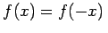
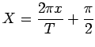
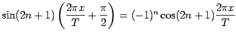
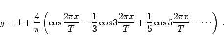
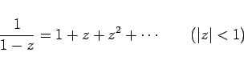
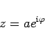
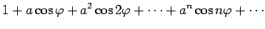
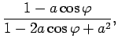
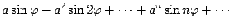
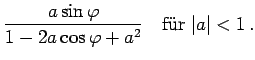

In der Tabelle FOURIER-Entwicklungen sind die FOURIER-Entwicklungen einiger einfacher Funktionen angegeben, die in einem bestimmten Intervall gegeben sind und darüber hinaus periodisch fortgesetzt werden. Der Kurvenverlauf ist für eine Reihe der entwickelten Funktion graphisch dargestellt.
| Beispiel |
|
Eine Funktion , die durch die Bedingungen |
gegeben ist (s. Abbildung), kann auf die Form Nr. 5 in der Tabelle FOURIER-Entwicklungen gebracht werden, indem a = 1 gesetzt wird und die neuen Variablen Y=y-1 und  eingeführt werden.
Durch die Variablensubstitution in der Reihe Nr. 5 der Tabelle erhält man wegen
 für die darzustellende Funktion (7.109a) den Ausdruck
|  | (7.109b) |
| Beispiel |
|
Die Entwicklung der Funktion |
|  | (7.110) |
liefert für
|  | (7.111) |
nach der Trennung von Real- und Imaginärteil
|  | = |  | |
|  | = |  | (7.112) |